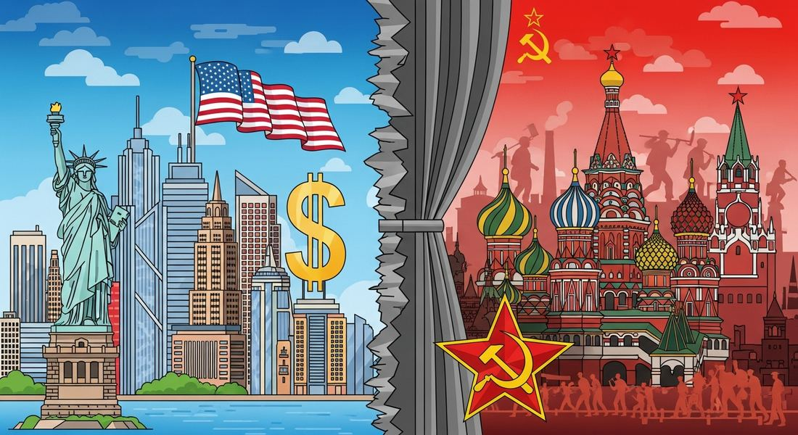

8.2 The Cold War
- LO-A: Capitalism vs. Communism, the core divide: The US promoted liberal democracy and free-market capitalism; the USSR promoted communist authoritarianism and state-controlled economies. This ideological divide drove the Cold War conflict across nearly every continent. The Non-Aligned Movement said "no thank you" to both: Led by figures like Sukarno (Indonesia) and Kwame Nkrumah (Ghana), the NAM tried to stay independent of both superpower blocs, insisting that newly independent nations didn't have to choose sides. This is a required CED illustrative example. Cultural conflict mattered as much as military competition: The Cold War was fought with propaganda, cultural exports (jazz, Hollywood, Soviet ballet), science (space race), and economic aid, not just weapons. Both sides tried to win the "hearts and minds" of the developing world. The "bipolar world" shaped everything: Every local conflict, every independence movement, every economic policy was filtered through the lens of Cold War competition. Understanding this is key to interpreting virtually every event in Topics 8.2–8.8.
Try each question before revealing the answer.
1. What did "capitalism" and "communism" actually mean in the Cold War context, not just as economic systems, but as complete social visions?
2. Why did many newly independent nations join the Non-Aligned Movement rather than siding with the US or USSR?
3. The CED identifies the Cold War conflict as extending beyond its "basic ideological origins." What does this mean?
- Explain the causes and effects of the ideological struggle of the Cold War, including the US-Soviet rivalry and the Non-Aligned Movement with Sukarno (Indonesia) and Kwame Nkrumah (Ghana) as key examples
Tap a term for its definition.
-
Definition: U.S. foreign policy strategy (articulated by diplomat George Kennan, 1946) of preventing the spread of Soviet communism beyond its existing borders. Significance: Became the dominant framework for U.S. foreign policy for 40+ years, justifying interventions across Asia, Latin America, and Africa.
-
Definition: U.S. policy declaring that America would support "free peoples" resisting communist takeover, first applied to Greece and Turkey. Significance: Marked the formal beginning of U.S. Cold War foreign policy and set the precedent for intervention anywhere communism threatened.
-
Definition: U.S. program providing $13 billion in economic aid to rebuild Western European economies after WWII. Significance: Prevented economic collapse in Western Europe that might have led to communist electoral victories; also tied Western Europe more firmly to the US economic system.
-
Definition: A group of nations, primarily newly independent states in Asia, Africa, and Latin America, that refused to formally align with either the US or Soviet bloc during the Cold War. Significance: CED illustrative example; represented by Sukarno (Indonesia) and Kwame Nkrumah (Ghana), demonstrated that newly independent nations sought a "third way" beyond superpower competition.
-
Definition: First president of Indonesia (1945–1967); led the independence movement against the Dutch; co-founded the Non-Aligned Movement. Significance: CED illustrative example for the NAM; hosted the Bandung Conference (1955) which launched the formal non-alignment movement and united Asian and African nations.
-
Definition: Leader of Ghanaian independence (1957) and Ghana's first president; pan-Africanist who championed African unity and non-alignment. Significance: CED illustrative example for both the NAM (8.2) and decolonization (8.5); Ghana was the first sub-Saharan African nation to achieve independence, inspiring movements across the continent.
-
Definition: Term used by Winston Churchill (1946) to describe the division of Europe into Western (democratic/capitalist) and Eastern (Soviet-dominated communist) blocs. Significance: The Iron Curtain physically and ideologically divided Europe for over 40 years, symbolized most visibly by the Berlin Wall (1961–1989).
-
Definition: Conference of 29 Asian and African nations in Bandung, Indonesia, that laid the groundwork for the Non-Aligned Movement; promoted anti-colonialism, solidarity, and independence from superpower blocs. Significance: First major international gathering of newly independent nations from the "Global South"; signaled the emergence of a new global political force.
🔴🔵 The Ideological Divide: Capitalism vs. Communism
At the heart of the Cold War was a fundamental disagreement about how society should be organized. The United States championed liberal democracy and capitalism: private ownership of property, free markets, individual political rights, and elected government. The Soviet Union championed communism: state ownership of the economy, collective rights, one-party rule, and the eventual creation of a classless society. Both sides believed their system was not just better, but historically inevitable, and that the world would eventually adopt it.
The CED identifies this as an ideological conflict between "the democracy of the United States and the authoritarian communist Soviet Union" that "led to ideological conflict and a power struggle between capitalism and communism across the globe" (KC-6.2.IV.C.ii). Note the key word: the US system is described as democracy, the Soviet system as authoritarian communist. This framing matters. It reflects how AP assesses this topic.

Image credit not specified.
AI-generated illustration (Google Gemini, 2025), commercially licensed.
🌍 Origins: How the Cold War Began
The WWII alliance between the US and USSR was always uneasy, two incompatible ideological systems united only by the common threat of Nazi Germany. Once Germany was defeated (May 1945), their alliance quickly dissolved. Several key events accelerated the breakdown:
- Soviet domination of Eastern Europe (1945–47): As the Red Army liberated Eastern Europe from German occupation, it installed pro-Soviet communist governments, in Poland, Czechoslovakia, Hungary, Romania, Bulgaria, and East Germany. The US saw this as Soviet imperial expansion; the USSR saw it as creating a defensive buffer zone against future invasion.
- Winston Churchill's "Iron Curtain" speech (1946): Churchill declared that "an iron curtain has descended across the continent," dividing free Western Europe from Soviet-dominated Eastern Europe. This speech gave Cold War language its most famous metaphor.
- Truman Doctrine (1947): President Truman declared that the US would support "free peoples" resisting communist takeover, specifically in Greece (where communists were fighting in a civil war) and Turkey. This formalized U.S. Cold War policy of containment, preventing further communist expansion.
- Marshall Plan (1948): The US provided $13 billion to rebuild Western European economies. The strategic logic: economic devastation breeds political radicalism; a prosperous Western Europe would resist communist electoral victories. The USSR refused Marshall aid for itself and Eastern Europe, deepening the division.
🌏 The Non-Aligned Movement: A Third Way, KC-6.2.V.B
Not everyone accepted the Cold War's binary logic. The AP CED identifies the Non-Aligned Movement as a key example of "groups and individuals... [who] opposed and promoted alternatives to the existing economic, political, and social orders" (KC-6.2.V.B). Know these two figures for the exam:
Sukarno (Indonesia): Indonesia's first president had led the independence movement against Dutch colonial rule, declaring independence in 1945 and finally securing it after a four-year independence war in 1949. Sukarno was deeply suspicious of both superpowers. He hosted the Bandung Conference in 1955, a gathering of 29 Asian and African nations that produced the foundational principles of non-alignment: respect for sovereignty, anti-colonialism, non-interference, and rejection of military alliances with either superpower bloc. Bandung was the seed from which the formal Non-Aligned Movement grew (officially founded 1961).
Kwame Nkrumah (Ghana): Nkrumah led the Gold Coast's independence movement and became Ghana's first prime minister (1957) and then president (1960) when it became a republic. He was a committed pan-Africanist who envisioned a unified Africa free of both European imperialism and superpower domination. Nkrumah championed non-alignment as essential to genuine independence: "We face neither East nor West; we face forward." He developed the concept of neocolonialism, the idea that formal independence could be undermined by economic dependence on former colonial powers or superpowers. The US-backed coup that deposed him in 1966 while he was abroad seemed to validate his warnings about neocolonialism.
🎭 The Cultural Cold War
The Cold War was not just a military and political competition. It was a competition for global opinion, especially among newly independent nations deciding which model to follow. Both superpowers invested heavily in cultural diplomacy.
The US exported jazz music (sending Louis Armstrong and Dizzy Gillespie on State Department-sponsored tours to Africa and Asia), Hollywood films, and consumer goods to demonstrate the prosperity of capitalist democracy. The Voice of America broadcast news and music to countries behind the Iron Curtain. The CIA secretly funded cultural institutions, including literary journals and art exhibitions, to promote American culture internationally.
The USSR countered with the Bolshoi Ballet, Soviet cinema, and communist literacy campaigns in developing countries. Soviet propaganda highlighted American racial segregation (a genuine vulnerability, the US claimed to champion freedom while practicing Jim Crow) to undermine American credibility in Asia and Africa. The Sputnik satellite and later Yuri Gagarin's space flight (first human in space, 1961) were presented as proof that communist central planning could outpace capitalist innovation.
These videos will help you review The Cold War and solidify key concepts before your exam.
- The desire of newly independent nations to form a military alliance against their former colonial powers
- The economic competition between the US and USSR for access to developing-world resources
- The Cold War pressure on newly independent nations to align with either the US or Soviet bloc, which threatened genuine sovereignty
- The United Nations' failure to provide security guarantees for newly independent nations
- It shows that both superpowers were equally committed to expanding their military power globally
- It establishes that both systems represented fundamentally different visions of how society should be organized, making compromise or reconciliation nearly impossible
- It demonstrates that the conflict was purely economic rather than political or cultural
- It explains why the Soviet Union eventually won the Cold War by offering a more appealing model
- Laid the groundwork for the Non-Aligned Movement by gathering newly independent Asian and African nations to articulate an alternative to Cold War alignment
- Created a formal military alliance among Asian and African nations capable of resisting superpower pressure
- Successfully negotiated independence for remaining European colonies in Asia and Africa
- Established the United Nations as the primary forum for resolving Cold War disputes
- Directly funded anti-communist military forces across Western Europe
- Required Western European nations to adopt the US economic system in exchange for aid
- Established US military bases across Western Europe as the primary defense against Soviet expansion
- Used economic aid to prevent political conditions, specifically economic desperation, that might lead to communist electoral victories in Western Europe
- The tendency of newly independent nations to voluntarily rejoin their former empires for economic stability
- The continuation of European economic dominance over formally independent nations through trade, investment, and financial structures even after political independence
- The Soviet Union's economic control over communist nations in Eastern Europe through the Warsaw Pact
- The failure of the United Nations to enforce economic sovereignty for developing nations